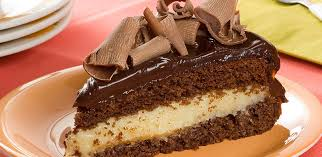

Mundo das receitas
O bolo mágico

Ingredientes
- 3 dúzias de ovos
- 1 Kg de farinha de trigo
- 1 chablau de fermento químico
- Muita acucar
Preparo
- Coloque os ovos inteiros sem quebrar em uma tigela
- Quebre os ovos enquanto despeja farinha
- Coloque acucar
- Coloque o fermento
- Mexa até se cansar
- Asse a 350 graus (o bolo não voce)